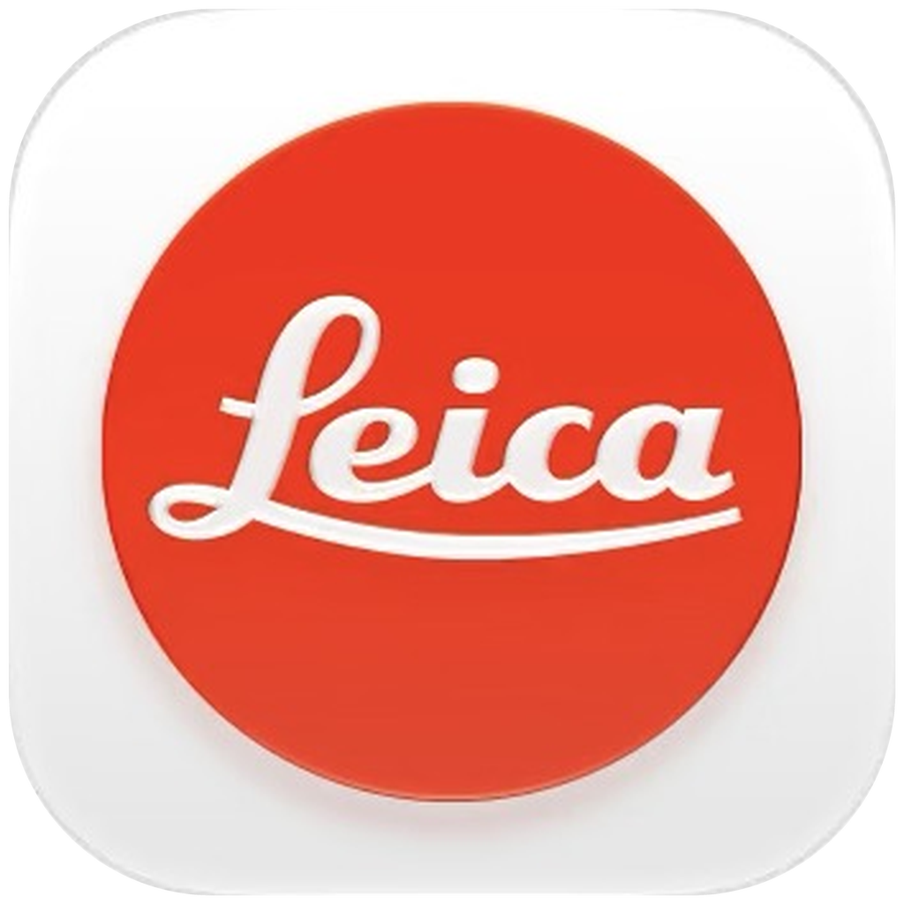
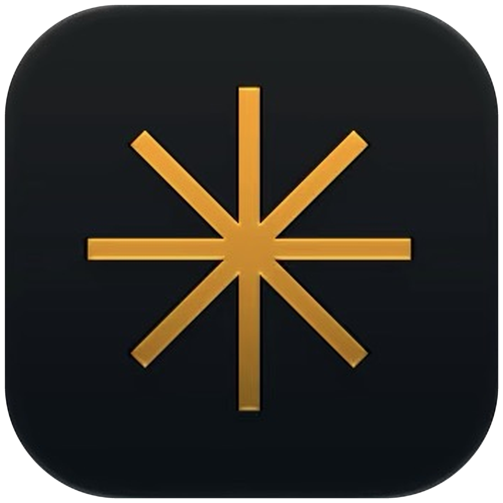

Semana CriativaEP. 01 — Introdução
Sua criatividade
merecenovas ferramentas.
3
Fig. 01 — Três apps, um processo
Às vezes, tudo o que você precisa é conhecer novas ferramentas para transformar suas ideias em projetos incríveis.
Conheça 3 aplicativos que podem elevar seu processo criativo.
- 01

Leica LUXfoto - 02
 Evotoretrato
Evotoretrato - 03

Luminaredição
Chagas Criatividade02 / 07